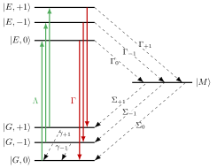

Generalized Hamiltonian for multiple ¹³C atoms around an NV center
For the purpose of implementing a very general numerical model of the interaction of the nuclear spin of one or more ¹³C atoms with the electronic spin of a single NV center in diamond in a private C13NV Julia package, we extensively discuss the Hamiltonian and Liouvillian for the system in full generality. Within C13NV, the construction is encapsulated in a make_nv_system function, that receives various system parameters and returns a Hamiltonian or Liouvillian (a QuantumPropagators.Generators.Generator instance) along with a list of labels (each label is a tuple of strings).
We discuss first the high-level structure of the Hilbert space (Structure of the Hilbert space) and the Hamiltonian/Liouvillian (Structure of the Hamiltonian and Liouvillian) before deriving the operators in detail. Lab Frame Hamiltonian for the Ground State Manifold lists the lab frame Hamiltonian and defines the spin operators for the electronic and nuclear spins. Microwave Field Rotating Wave Approximation transforms the lab frame Hamiltonian into the rotating frame. This yields one possible Hamiltonian to use numerically (frame = :rwa). Diagonalizing the Hyperfine Interaction goes further by analytically diagonalizing the hyperfine interaction between the nuclear spin and the electronic spin of the NV center. This yields an alternative form of the Hamiltonian (frame = :diag), which allows for a better understanding of avoided Landau-Zener crossings, discussed in Mapping between Electronic and Nuclear Spins via Landau-Zener Crossings. Lastly, Dissipators for the Excited and Metastable Manifolds describes the Lindblad operators for the full dissipative model.
Structure of the Hilbert space
- The optical Hilbert space is $ℋ_O$ with levels $|G⟩$, $|E⟩$, $|M⟩$. The Hilbert space may be truncated to $|G⟩$ if the parameter
Λrepresenting $\Lambda(t)$ is passed asnothing. Note thatΛ = 0.0is possible to force inclusion of all optical levels. - The Hilbert space of the NV center electronic spin is $ℋ_S$ with levels $|+1⟩$, $|0⟩$, $|-1⟩$. The $|-1⟩$ level is truncated if the
Ω₋parameter representing $\Omega_{-}(t)$ is given asnothing, and likewise for $|+1⟩$ andΩ₊. EitherΩ₊orΩ₋can be passed as0.0to force inclusion of the level. - The nuclear spin of each surrounding C13 is a TLS with Hilbert space $ℋ_I^{(n)}$ spanned by the states $|↑⟩$, $|↓⟩$. These get tensored into a $2^N$-dimensional spin space $ℋ_I = ℋ_I^{(1)} \otimes \dots \otimes ℋ_I^{(N)}$; for $N=2$: $|↑↑⟩$, $|↑↓⟩$, $|↓↑⟩$, $|↓↓⟩$, etc., for larger $N$.
The structure of the full Hilbert space is a little bit tricky, since the meta-stable state $|M⟩$ does not distinguish between different electronic-spin degrees of freedom, and thus the three Hilbert spaces are not simply tensored. Instead,
\[\begin{equation}\label{eq-Hilbert-space-structure} \begin{split} ℋ &= ℐ_G \otimes ℋ_S \otimes ℋ_I\; \oplus \; ℐ_E \otimes ℋ_S \otimes ℋ_I\; \oplus \; ℐ_M \otimes ℋ_I\\ &= (ℐ_G \oplus ℐ_E) \otimes \, ℋ_S\, \otimes \, ℋ_I\; \oplus \; ℐ_M\, \otimes \, ℋ_I\\ &= \underbrace{((ℐ_G \oplus ℐ_E) \otimes \, ℋ_S\, \oplus \, ℐ_M)}_{\equiv ℋ_{OS}} \, \otimes \, ℋ_I\,, \end{split} \end{equation}\]
where $ℐ_G$, $ℐ_E$, and $ℐ_M$ are the (trivial) one-dimensional Hilbert spaces consisting only of the optical levels $|G⟩$, $|E⟩$, and $|M⟩$, respectively. $ℋ_S$ is the Hilbert space of the electronic spin, spanned by the three levels $|+1⟩$, $|0⟩$, $|-1⟩$ (or a truncation thereof). We may define $ℋ_{OS} = ((ℐ_G \oplus ℐ_E) \otimes \, ℋ_S\, \oplus \, ℐ_M)$ in the third line of Equation $\eqref{eq-Hilbert-space-structure}$ as the combined Hilbert space for the optical and electronic-spin degree of freedom, with the basis $|G,+1⟩$, $|G,0⟩$, $|G,-1⟩$, $|E,+1⟩$, $|E,0⟩$, $|E,-1⟩$, $|M⟩$. The structure in lines 2 and 3 of Equation $\eqref{eq-Hilbert-space-structure}$ is particularly helpful for constructing the relevant Lindblad operators in the full (optical) system.
Structure of the Hamiltonian and Liouvillian
The transitions in the electronic spin states of the NV center $|+1⟩$, $|0⟩$, $|-1⟩ \in ℋ_S$ are driven by a microwave (MW) field
\[\begin{equation}\label{eq-combined-mw-field} \frac{1}{\sqrt{2}} \Omega(t) = \Omega_{-}(t) \cos(\omega_{-} t + \phi_{-}(t)) + \Omega_{+}(t) \cos(\omega_{+} t + \phi_{+}(t))\,, \end{equation}\]
where the factor $\frac{1}{\sqrt{2}}$ is to compensate for the normalization factor in the $\hat{S}_x$ operator, see below in Lab Frame Hamiltonian for the Ground State Manifold. In a two-color rotating frame for the central frequencies $\omega_{\pm}$, this results in four independent control fields:
- $\omega_{-}(t) \equiv \frac{d\phi_{-}(t)}{dt}$, the deviation (dynamic shift) from the central frequency $\omega_{-}$. Note that we use both the time-dependent $\omega_{-}(t)$ and the time-independent $\omega_{-}$ with different meanings.
- $\omega_{+}(t) \equiv \frac{d\phi_{+}(t)}{dt}$, the deviation (dynamic shift) from the central frequency $\omega_{+}$
- $\Omega_{-}(t)$, the envelope for the amplitude driving the $|-1⟩ \leftrightarrow |0⟩$ transition
- $\Omega_{+}(t)$, the envelope for the amplitude driving the $|0⟩ \leftrightarrow |+1⟩$ transition
Within the QuantumControl.jl framework, the system Hamiltonian is expressed in the nested-list format
\[\begin{equation}\label{eq-nested-list} \hat{H} = [\hat{H_0}, [\hat{H}_{\omega_{-}}, \omega_{-}(t)], [\hat{H}_{\omega_{+}}, \omega_{+}(t)], [\hat{H}_{\Omega_{-}}, \Omega_{-}(t)], [\hat{H}_{\Omega_{+}}, \Omega_{+}(t)]] \end{equation}\]
with the drift Hamiltonian $\hat{H_0}$, the control Hamiltonians $\hat{H}_{\omega_{-}}$, $\hat{H}_{\omega_{+}}$, $\hat{H}_{\Omega_{-}}$, and $\hat{H}_{\Omega_{+}}$, and the controls listed above.
Construction of the Hamiltonian proceeds as follows:
Construct spin operators for the appropriately truncated Hilbert space $ℋ_S$, as well as $ℋ_I^{(n)}$
Construct the parts of Equation $\eqref{eq-combined-mw-field}$ $\in ℋ_S \otimes ℋ_I$ according to Equation $\eqref{eq-rwa-hamiltonian-nested-list}$ if
frame = :rwa, see Microwave Field Rotating Wave Approximation, or Equation $\eqref{eq-hamiltonian-diagonal-nested-list}$ ifframe = :diag, see Diagonalizing the Hyperfine InteractionIf the full optical Hilbert space $ℋ_O$ is required (
Λis given), extend each operator into the full $ℋ$ according to\[\begin{equation}\label{eq-hamiltonian-extension} \hat{H}_{n} \rightarrow (𝟙_G \otimes \hat{H}_n) \,\oplus\, \underbrace{(𝟙_E \otimes 𝟘_S \otimes 𝟘_I) \,\oplus\, (𝟙_M \otimes 𝟘_I)}_{\text{padding}} \end{equation}\]
cf. the first line of Equation $\eqref{eq-Hilbert-space-structure}$, with the trivial $𝟙_G = 𝟙_E = 𝟙_M = 1$. That is, we are simply padding the Hamiltonian with zeros to reach the size of the full Hilbert space. The choice of $𝟘_S$ and $𝟘_I$ reflects the fact that there are no coherent dynamics in the $|E⟩$ and $|M⟩$ manifolds.
The make_nv_system function returns a Liouvillian if Λ is given, or if decay rates $\gamma_{\pm 1}$ for the spontaneous decay in the electronic spin levels is given with a decay rate $> 0$. The incoherent drive with Λ is time-dependent, and must be set up specially, see Dissipators for the Excited and Metastable Manifolds for details.
Lab Frame Hamiltonian for the Ground State Manifold
We are considering here the Hamiltonian of a single electronic spin described in the ground-state manifold $|G⟩$ by the spin operators $\hat{\mathbf{S}} = (\hat{S}_x, \hat{S}_y, \hat{S}_z)$ and $N$ nuclear spins described by $\hat{\mathbf{I}}^{(n)} = (\hat{I}^{(n)}_x, \hat{I}^{(n)}_y, \hat{I}^{(n)}_z)$, with the element $A_{i,j}^{(n)}$ of the hyperfine tensor giving the strength of the interaction between the $j = x,y,z$ components of the $n$'th nuclear spin and the $i = x,y,z$ component of the electronic spin. The full Hamiltonian has the form [1, 2],
\[\begin{equation}\label{eq-lab-hamiltonian} \hat{H}_{\text{lab}} = D \hat{S}_z^2 - \gamma_e \mathbf{B} \cdot \hat{\mathbf{S}} + \sum_{n=1}^{N} \left( \sum_{\substack{i,j\\=x, y, z}} A^{(n)}_{i,j} (\hat{S}_i \otimes \hat{I}^{(n)}_j) - \gamma_c \mathbf{B} \cdot \hat{\mathbf{I}}^{(n)} \right) + \mu \Omega(t) \hat{S}_x\,, \end{equation}\]
with $\Omega(t)$ given by Equation $\eqref{eq-combined-mw-field}$, the electronic spin energy $D \approx$ 3 GHz, the electron gyromagnetic ratio $\gamma_e =$ 2.8 MHz/G, the nuclear gyromagnetic ratio $\gamma_c =$ 1.07 kHz/G, and the hyperfine tensor $A^{(n)}$ mediating the interaction between the n-th carbon nuclear spin and the electronic spin of the NV center. The factor $\mu$ is $\mu = 1$ by default, but allows to account for the NV center seeing a reduced microwave field (due to field gradient across an ensemble of NV centers).The spin operators for the electronic spin are those for a spin-1 particle, with quantum numbers $(+1, 0, -1)$, cf. the $\hat{S}_z$ operator:
\[ \hat{S}_x = \frac{1}{\sqrt{2}}\begin{pmatrix} 0 & 1 & 0 \\ 1 & 0 & 1 \\ 0 & 1 & 0 \end{pmatrix}\,,\quad \hat{S}_y = \frac{1}{\sqrt{2}}\begin{pmatrix} 0 & -i & 0 \\ i & 0 & -i \\ 0 & i & 0 \end{pmatrix}\,,\quad \hat{S}_z = \begin{pmatrix} 1 & 0 & 0 \\ 0 & 0 & 0 \\ 0 & 0 & -1 \end{pmatrix}\,,\quad 𝟙_S = \begin{pmatrix} 1 & 0 & 0 \\ 0 & 1 & 0 \\ 0 & 0 & 1 \end{pmatrix}\,. \]
If we are only going to drive one of the $-1 \leftrightarrow 0$ or $0 \leftrightarrow +1$ transitions, we can simply truncate the Hilbert space by cutting the above matrices from $3 \times 3$ to $2 \times 2$.
The nuclear spin is spin-$\frac{1}{2}$, and thus,
\[\hat{I}_x^{(n)} = \frac{1}{2}\begin{pmatrix} 0 & 1 \\ 1 & 0 \end{pmatrix}\,,\qquad \hat{I}_y^{(n)} = \frac{1}{2}\begin{pmatrix} 0 & -i \\ i & 0 \end{pmatrix}\,,\qquad \hat{I}_z^{(n)} = \frac{1}{2}\begin{pmatrix} 1 & 0 \\ 0 & -1 \end{pmatrix}\,,\qquad 𝟙_I^{(n)} = \begin{pmatrix} 1 & 0 \\ 0 & 1 \end{pmatrix}\,,\]
with eigenstates labeled $|↑⟩$ and $|↓⟩$.
The magnetic field vector is
\[\begin{equation}\label{eq-magnetic-field-vector} \mathbf{B} = B \begin{pmatrix} \sin(\theta) \cos(\phi)\\ \sin(\theta) \sin(\phi)\\ \cos(\theta) \end{pmatrix} \end{equation}\]
with the azimuthal angle $\theta$, the polar angle $\phi$, and the field-strength $B$. We will assume $\theta = 0$, but there is no need to restrict a numerical model to a magnetic field not aligned with the $z$-axis defined by the NV center. In Equation $\eqref{eq-lab-hamiltonian}$, operators are implicitly tensored with the identity operator of all other subspaces.
Microwave Field Rotating Wave Approximation
To simplify the numerical model, and to remove the fast oscillations $\omega_{+}$ and $\omega_{-}$, we transform the Hamiltonian to a rotating frame and apply the rotating wave approximation (RWA). The main result of this section is Equation $\eqref{eq-rwa-hamiltonian}$.
The rotating frame is defined by the operator
\[\begin{equation}\label{eq-U-RWA} \hat{U}_{\text{RWA}}(t) = \text{diag}\left[\; \exp[i \omega_{+} t + \phi_{+}(t)], \quad 1, \quad \exp[i \omega_{-} t + \phi_{-}(t)] \;\right] \end{equation}\]
in the electronic spin subspace. The wave function in the rotating frame is defined as $|\tilde{\Psi}(t)⟩ = \hat{U}_{\text{RWA}}(t) |\Psi(t)⟩$. The Hamiltonian in the rotating frame is
\[\begin{equation}\label{eq-H-RWA-general} \hat{H}_{\text{RWA}} = i \hbar \dot{U}_{\text{RWA}} \hat{U}_{\text{RWA}}^\dagger + \hat{U}_{\text{RWA}} \hat{H}_{\text{lab}} \hat{U}_{\text{RWA}}^\dagger \end{equation}\]
We again have the implicit tensor product, i.e., in the full Hilbert space, Equation $\eqref{eq-H-RWA-general}$ is more properly written with $\hat{U}_{\text{RWA}} \rightarrow \hat{U}_{\text{RWA}} \otimes 𝟙_I$. It is helpful to explicitly consider the transformation in the electronic-spin-subspace within this tensor structure. For the first term in Equation $\eqref{eq-H-RWA-general}$,
\[\begin{equation}\label{eq-RWA-term1} i \hbar \left(\frac{\partial}{\partial t}(\hat{U}_{\text{RWA}} \otimes 𝟙_I)\right)\left(\hat{U}_{\text{RWA}} \otimes 𝟙_I \right)^\dagger = (i \hbar \dot{U}_{\text{RWA}} \hat{U}_{\text{RWA}}^\dagger) \otimes 𝟙_I \end{equation}\]
For the second term in Equation $\eqref{eq-H-RWA-general}$, we observe that Equation $\eqref{eq-lab-hamiltonian}$ has the form
\[\begin{equation}\label{eq-H-as-sum-over-k} \hat{H}_{\text{lab}} = \sum_k \hat{H}_S^{(k)} \otimes \hat{H}_I^{(k)} \end{equation}\]
where $k$ simply numbers the different terms, and $\hat{H}_S^{(k)}$ and $\hat{H}_I^{(k)}$ are operators in the electronic-spin and combined-nuclear-spins subspaces. Consequently,
\[\begin{equation}\label{eq-RWA-term2} \begin{split} \left(\hat{U}_{\text{RWA}} \otimes 𝟙_I \right) \hat{H}_{\text{lab}} \left(\hat{U}_{\text{RWA}} \otimes 𝟙_I \right)^\dagger &= \sum_k \left(\hat{U}_{\text{RWA}} \otimes 𝟙_I \right) \left(\hat{H}_S^{(k)} \otimes \hat{H}_I^{(k)}\right) \left(\hat{U}_{\text{RWA}} \otimes 𝟙_I \right)^\dagger \\ &= \sum_k \hat{U}_{\text{RWA}} \hat{H}_S^{(k)} \hat{U}_{\text{RWA}}^\dagger \otimes \hat{H}_I^{(k)} \end{split} \end{equation}\]
In both cases, we have made use of the distributive property of tensor and matrix products,
\[\begin{equation}\label{eq-tensor-distributivity} (\hat{A} \otimes \hat{B}) (\hat{C} \otimes \hat{D}) = \hat{A} \hat{C} \otimes \hat{B}\hat{D} \end{equation}\]
We can now apply this to the individual operators in Equation $\eqref{eq-lab-hamiltonian}$, while also neglecting any fast-rotating terms $\propto \exp(\pm i \omega_{\pm}t)$ (or faster), with the resonance condition
\[\begin{equation}\label{eq-resonance-condition} \omega_{\pm} = D - B \gamma_e \cos(\theta) - \delta_{\pm} \quad\Leftrightarrow\quad \delta_{\pm} \equiv D - B \gamma_e \cos(\theta) - \omega_{\pm}\,, \end{equation}\]
introducing the detunings $\delta_{+}$ and $\delta_{-}$.
One remarkable finding that simplifies the structure of the resulting rotating wave Hamiltonian is that [3]
\[\begin{equation}\label{eq-S-in-RWA} \hat{U}_{\text{RWA}} \hat{S}_{x,y} \hat{U}_{\text{RWA}}^\dagger \approx 0\,,\qquad \hat{U}_{\text{RWA}} \hat{S}_{z} \hat{U}_{\text{RWA}}^\dagger = \hat{S}_{z}\,, \end{equation}\]
so that
\[\begin{equation}\label{eq-hyperfine-RWA} \hat{U}_{\text{RWA}} \left( \sum_{\substack{i,j\\=x, y, z}} A^{(n)}_{i,j} (\hat{S}_i \otimes \hat{I}^{(n)}_j) \right) \hat{U}_{\text{RWA}}^\dagger = \sum_{\substack{j\\=x, y, z}} A_{z,j}^{(n)} \hat{S}_z \otimes \hat{I}_j^{(n)} = \hat{S}_z \otimes \hat{A}_I^{(n)}\,, \end{equation}\]
with the hyperfine projections
\[\begin{equation}\label{eq-A-I-matrix} \hat{A}_I^{(n)} = \sum_j A_{z,j}^{(n)} \hat{I}_j^{(n)} = \frac{1}{2} \begin{pmatrix} A_{zz}^{(n)} & A_{zx}^{(n)} - i A_{zy}^{(n)} \\ A_{zx}^{(n)} + i A_{zy}^{(n)} & -A_{zz}^{(n)} \end{pmatrix}\,. \end{equation}\]
Similarly, we can define
\[\begin{equation}\label{eq-B-I-matrix} \hat{B}_I^{(n)} = \mathbf{B} \cdot \hat{\mathbf{I}}^{(n)} = \frac{B}{2} \begin{pmatrix} \cos(\theta) & \sin(\theta)\cos(\phi) - i \sin(\theta)\sin(\phi)\\ \sin(\theta)\cos(\phi) + i \sin(\theta)\sin(\phi) & -\cos(\theta) \end{pmatrix}\,. \end{equation}\]
Going through all the terms in Equation $\eqref{eq-lab-hamiltonian}$, we thus find
\[\begin{equation}\label{eq-rwa-hamiltonian} \hat{H}_{\text{RWA}} = (\hat{\delta} - \hat{\omega}(t)) \otimes 𝟙_I + \sum_{n=1}^{N} \left(\hat{S}_z \otimes \hat{A}_I^{(n)} - \gamma_c 𝟙_S \otimes \hat{B}_I^{(n)} \right) + \hat{\Omega}(t) \otimes 𝟙_I\,, \end{equation}\]
with
\[ \hat{\delta} = \text{diag}\left[\delta_{+}, 0, \delta_{-}\right],\quad \hat{\omega}(t) = \text{diag}\left[\dot\phi_{+}(t), 0, \dot\phi_{-}(t)\right],\quad \hat{\Omega}(t) = \frac{\mu}{2} \begin{pmatrix} 0 & \Omega_{+}(t) & 0 \\ \Omega_{+}(t) & 0 & \Omega_{-}(t) \\ 0 & \Omega_{-}(t) & 0 \end{pmatrix}\,. \]
For the nested-list format in Equation $\eqref{eq-nested-list}$, this means
\[\begin{equation}\label{eq-rwa-hamiltonian-nested-list} \begin{split} \hat{H}_{0, \text{RWA}} & = \hat{\delta} \otimes 𝟙_I + \sum_{n=1}^{N} \left(\hat{S}_z \otimes \hat{A}_I^{(n)} - \gamma_c 𝟙_S \otimes \hat{B}_I^{(n)} \right) \\ \hat{H}_{\omega_{-}, \text{RWA}} & = -|-1⟩⟨-1| \; \otimes \; 𝟙_I \\ \hat{H}_{\omega_{+}, \text{RWA}} & = -|+1⟩⟨+1| \; \otimes \; 𝟙_I \\ \hat{H}_{\Omega_{-}, \text{RWA}} & = \frac{\mu}{2} \left( |0⟩⟨-1| + |-1⟩⟨0| \right) \otimes 𝟙_I \\ \hat{H}_{\Omega_{+}, \text{RWA}} & = \frac{\mu}{2} \left( |0⟩⟨+1| + |+1⟩⟨0| \right) \otimes 𝟙_I \end{split} \end{equation}\]
These operators are all in $ℋ_S \otimes ℋ_I$.
Linear Chirp and Single Carbon

The energy levels are depicted in the figure above, for the special case of a linear chirp,
\[\begin{equation}\label{eq-linear-chirp} \dot\phi_{\pm}(t) = \alpha_{\pm} (t - t_{\pm})\,, \end{equation}\]
a single carbon atom in the z-x plane ($A_{zy} = 0$) and the $B$ field aligned to the $z$ axis ($\theta = \phi = 0$ in Equation $\eqref{eq-magnetic-field-vector}$).
In explicit matrix form, the Hamiltonian for this special case in the subspace including the electronic spin $0$ and the $+1$ subspace is [4]
\[\begin{equation}\label{eq-hamiltonian-rwa-matrix-plus} \hat{H}_{\text{RWA}, +} = \begin{pmatrix} \frac{A_{zz}}{2} - \frac{B \gamma_c}{2} - \alpha_{+}(t - t_{+}) + \delta_{+} & \frac{A_{zx}}{2} & \frac{\mu\Omega_{+}(t)}{2} & 0 \\ \frac{A_{zx}}{2} & -\frac{A_{zz}}{2} + \frac{B \gamma_c}{2} - \alpha_{+} (t - t_{+}) + \delta_{+} & 0 & \frac{\mu\Omega_{+}(t)}{2} \\ \frac{\mu\Omega_{+}(t)}{2} & 0 & -\frac{B \gamma_c}{2} & 0 \\ 0 & \frac{\mu\Omega_{+}(t)}{2} & 0 & \frac{B \gamma_c}{2} \end{pmatrix}\,, \end{equation}\]
and, in the subspace with electronic spin $0$ and $-1$,
\[\begin{equation}\label{eq-hamiltonian-rwa-matrix-minus} \hat{H}_{\text{RWA}, -} = \begin{pmatrix} -\frac{B \gamma_c}{2} & 0 & \frac{\mu\Omega_{-}(t)}{2} & 0\\ 0 & \frac{B \gamma_c}{2} & 0 & \frac{\mu\Omega_{-}(t)}{2} \\ \frac{\mu\Omega_{-}(t)}{2} & 0 & - \frac{A_{zz}}{2} - \frac{B \gamma_c}{2} - \alpha_{-}(t - t_{-}) + \delta_{-} & \frac{A_{zx}}{2} \\ 0 & \frac{\mu\Omega_{-}(t)}{2} & -\frac{A_{zx}}{2} & \frac{A_{zz}}{2} + \frac{B \gamma_c}{2} - \alpha_{-} (t - t_{-}) + \delta_{-} \\ \end{pmatrix}\,. \end{equation}\]
Note the off-resonant Rabi-cycling in the $|\pm 1⟩$ manifolds, cf. also Equation $\eqref{eq-A-I-matrix}$.
Diagonalizing the Hyperfine Interaction
We can further simplify the Hamiltonian by diagonalizing the projection of the hyperfine matrix into the nuclear-spin subspace, Equation $\eqref{eq-A-I-matrix}$. We note that $\hat{A}_I^{(n)}$ is Hermitian, and thus real-valued eigenvalues and a unitary transformation operator $\hat{R}^{(n)}$ so that
\[\begin{equation}\label{eq-eigendecomposition} \hat{A}_I^{(n)} = \hat{R}^{(n)} \begin{pmatrix} \lambda_{+} & 0 \\ 0 & \lambda_{-} \end{pmatrix} \hat{R}^{(n)\dagger} \end{equation}\]
This eigendecomposition can be solved analytically [5] with
\[\begin{equation}\label{eq-analytical-eigenvalues} \lambda_{\pm} = \frac{\operatorname{tr}(\hat{A}_I^{(n)})}{2} \pm \sqrt{\frac{\operatorname{tr}^2(\hat{A}_I^{(n)})}{4} - \det(\hat{A}_I^{(n)})} \end{equation}\]
We can see that
\[ \operatorname{tr}(\hat{A}_I^{(n)}) = 0, \qquad \det(\hat{A}_I^{(n)}) = -\frac{1}{4} {A^{(n)}}^2\,, \]
with the overall hyperfine magnitude
\[\begin{equation}\label{eq-A} A^{(n)} \equiv \sqrt{{A_{zz}^{(n)}}^2 + {A_{zx}^{(n)}}^2 + {A_{zy}^{(n)}}^2}\,. \end{equation}\]
Thus, we have
\[\begin{equation}\label{eq-lambda} \lambda_{\pm} = \pm A / 2 \end{equation}\]
and
\[\begin{equation}\label{eq-eigendecomposition-A} \hat{A}_I^{(n)} = A \, \hat{R}^{(n)} \hat{I}_z^{(n)} \hat{R}^{(n)\dagger} \end{equation}\]
For $R^{(n)}$, with proper normalization ($R^{(n)} {R^{(n)}}^{\dagger} = 𝟙_I^{(n)}$), we find (temporarily dropping the superscript $(n)$ on the right-hand-side):
\[\begin{equation}\label{eq-R} \hat{R}^{(n)} = \frac{1}{\sqrt{2}} \begin{pmatrix} \frac{A_{zz} + A}{\sqrt{A^2 + A A_{zz}}} & \frac{A_{zz} - A}{\sqrt{A^2 - A A_{zz}}} \\ \frac{A_{zx} + i A_{zy}}{\sqrt{A^2 + A A_{zz}}} & \frac{A_{zx} + i A_{zy}}{\sqrt{A^2 - A A_{zz}}} \end{pmatrix} \end{equation}\]
For the total Hamiltonian, we can now define a diagonal frame via the unitary
\[\begin{equation}\label{eq-R-total} \hat{R} = \hat{R}^{(1)} \otimes \dots \otimes \hat{R}^{(N)}\,. \end{equation}\]
The Hamiltonian in this diagonal frame is
\[\begin{equation}\label{eq-hamiltonian-diagonal} \begin{split} \hat{H}_{\text{diag}} & = \hat{R}^\dagger \hat{H}_{\text{RWA}} \hat{R} \\ & = (\hat{\delta} - \hat{\omega}(t)) \otimes 𝟙_I + \sum_{n=1}^{N} \left(A^{(n)} \hat{S}_z \otimes \hat{I}_z^{(n)} - \gamma_c 𝟙_S \otimes \hat{B}_I^{(n)} \right) + \hat{\Omega}(t) \otimes 𝟙_I\,, \end{split} \end{equation}\]
with $\hat{B}_I^{(n)}$ defined in Equation $\eqref{eq-B-I-matrix}$. Any wave function $|\tilde{\Psi}(t)⟩$ in the rotating frame is transformed into the diagonal frame as $|\Psi(t)⟩ = \hat{R}^\dagger |\tilde{\Psi}(t)⟩$. Note the dagger, as we have used the common notation for the eigendecomposition in Equation $\eqref{eq-eigendecomposition}$, which is the opposite from the notation used for the rotating frame, cf. Equation $\eqref{eq-H-RWA-general}$. The transformation affects the relative population in the nuclear spins. In the diagonal frame, after $\Omega(t)$ has been switched off, the populations remain stable (since the Hamiltonian is diagonal). In contrast, in the lab/rotating frame, we would be seeing indefinite off-resonant Rabi-cycling in the $|\pm 1⟩$ manifolds. The transformation $\hat{R}$ precisely restores the superposition due to this Rabi cycling.
For the nested-list format in Equation $\eqref{eq-nested-list}$, this means
\[\begin{equation}\label{eq-hamiltonian-diagonal-nested-list} \hat{H}_{0, \text{diag}} = \hat{\delta} \otimes 𝟙_I + \sum_{n=1}^{N} \left(A^{(n)} \hat{S}_z \otimes \hat{I}_z^{(n)} - \gamma_c 𝟙_S \otimes \hat{B}_I^{(n)} \right) \end{equation}\]
and $\hat{H}_{\omega_{-}, \text{diag}}$ $\hat{H}_{\omega_{+}, \text{diag}}$ $\hat{H}_{\Omega_{-}, \text{diag}}$ $\hat{H}_{\Omega_{+}, \text{diag}}$ as in Equation $\eqref{eq-rwa-hamiltonian-nested-list}$; all operators in $ℋ_S \otimes ℋ_I$. The only difference between the rotating frame Hamiltonian in Equation $\eqref{eq-rwa-hamiltonian}$ and the diagonal frame Hamiltonian is the term $\hat{S}_z \otimes \hat{A}_I^{(n)}$ in Equation $\eqref{eq-rwa-hamiltonian}$ and Equation $\eqref{eq-rwa-hamiltonian-nested-list}$ being replaced with $A^{(n)} \hat{S}_z \otimes \hat{I}_z^{(n)}$ in Equation $\eqref{eq-hamiltonian-diagonal}$ and Equation $\eqref{eq-hamiltonian-diagonal-nested-list}$.
Linear Chirp and Single Carbon
As we did in the rotating frame in Equation $\eqref{eq-hamiltonian-rwa-matrix-plus}$ and Equation $\eqref{eq-hamiltonian-rwa-matrix-minus}$, we can again write out the Hamiltonian for the $0/+1$ and $0/-1$ manifolds under the assumption of a single nuclear spin and a linear chirp.
\[\begin{equation}\label{eq-hamiltonian-diag-matrix-plus} \hat{H}_{\text{RWA}, +} = \begin{pmatrix} \frac{A}{2} - \frac{B \gamma_c}{2} - \alpha_{+}(t - t_{+}) + \delta_{+} & 0 & \frac{\mu\Omega_{+}(t)}{2} & 0 \\ 0 & -\frac{A}{2} + \frac{B \gamma_c}{2} - \alpha_{+} (t - t_{+}) + \delta_{+} & 0 & \frac{\mu\Omega_{+}(t)}{2} \\ \frac{\mu\Omega_{+}(t)}{2} & 0 & -\frac{B \gamma_c}{2} & 0 \\ 0 & \frac{\mu\Omega_{+}(t)}{2} & 0 & \frac{B \gamma_c}{2} \end{pmatrix}\,, \end{equation}\]
\[\begin{equation}\label{eq-hamiltonian-diag-matrix-minus} \hat{H}_{\text{RWA}, -} = \begin{pmatrix} -\frac{B \gamma_c}{2} & 0 & \frac{\mu\Omega_{-}(t)}{2} & 0\\ 0 & \frac{B \gamma_c}{2} & 0 & \frac{\mu\Omega_{-}(t)}{2} \\ \frac{\mu\Omega_{-}(t)}{2} & 0 & - \frac{A}{2} - \frac{B \gamma_c}{2} - \alpha_{-}(t - t_{-}) + \delta_{-} & 0 \\ 0 & \frac{\mu\Omega_{-}(t)}{2} & 0 & \frac{A}{2} + \frac{B \gamma_c}{2} - \alpha_{-} (t - t_{-}) + \delta_{-} \\ \end{pmatrix}\,, \end{equation}\]
with the $A$ given in Equation $\eqref{eq-A}$.
Mapping between Electronic and Nuclear Spins via Landau-Zener Crossings
TODO
After a Landau-Zener transition, the probability of population transfer is [6]
\[\begin{equation}\label{eq-lz-probability} P_{LZ} = \exp\left(-2 \pi \frac{\vert\Omega\vert^2}{\vert\alpha\vert} \right) \end{equation}\]
Dissipators for the Excited and Metastable Manifolds

The optical laser field $\Lambda(t)$ enables incoherent transitions between the ground state $|G⟩$ manifold described above, and the excited state manifold $|E⟩$. We also have a decay channel from $|E⟩$ to $|G⟩$ via the metastable state $|M⟩$ (frequently also indicated as $|S⟩$ in the literature, but this might cause confusion), as depicted in the level scheme figure above.
The dynamics are described by a master equation in Lindblad form with the following Lindblad operators:
- $\hat{A}_{\Lambda} = \sqrt{\Lambda(t)} |E⟩⟨G| \otimes 𝟙_S \otimes 𝟙_I \, \oplus\, 𝟘_M \otimes 𝟙_I$
- $\hat{A}_{\Gamma} = \sqrt{\Gamma}|G⟩⟨E| \otimes 𝟙_S \otimes 𝟙_I \, \oplus\, 𝟘_M \otimes 𝟙_I$
where $|E⟩⟨G|$ and $|G⟩⟨E|$ are operators in the two-dimensional Hilbert space $ℐ_G \oplus ℐ_E$, cf. the second line in Equation $\eqref{eq-Hilbert-space-structure}$. The first of the two Lindblad operators above describes the somewhat unusual incoherent excitation of the $|E⟩$ manifold. The time-dependent $\Lambda(t)$ is not directly supported by the QuantumControl.liouvillian function. Instead, we construct a super-operator [7]
\[\begin{equation}\label{eq-dissipation-superop} L = (\hat{A}^\dagger)^T \otimes \hat{A} - \frac{1}{2} \left(𝟙 \otimes \hat{A}^\dagger \hat{A}\right) - \frac{1}{2} \left((\hat{A}^\dagger \hat{A})^T \otimes 𝟙\right)\,, \end{equation}\]
with $\hat{A}$ the operator $\hat{A}_{\Lambda}$ for $\sqrt{\Lambda(t)} = 1$ (i.e., without the rate factor). This is done by calling the QuantumControl.liouvillian function with nothing as the Hamiltonian and $\hat{A}$ as the only element in c_ops. The resulting $L$ is then added with a drive $\Lambda(t)$ to the Liouvillian super-operator initialized automatically via the QuantumControl.liouvillian function from the coherent Hamiltonian previously constructed, the dissipator $\hat{A}_{\Gamma}$, and the following further dissipators:
$\hat{A}_{\Gamma_{0}} = \sqrt{\Gamma_{0}}|M⟩⟨E,0| \otimes 𝟙_I$
$\hat{A}_{\Gamma_{-1}} = \sqrt{\Gamma_{-1}}|M⟩⟨E,-1| \otimes 𝟙_I$
$\hat{A}_{\Gamma_{+1}} = \sqrt{\Gamma_{+1}}|M⟩⟨E,+1| \otimes 𝟙_I$
$\hat{A}_{\Sigma_{0}} = \sqrt{\Sigma_{0}}|G,0⟩⟨M| \otimes 𝟙_I$
$\hat{A}_{\Sigma_{-1}} = \sqrt{\Sigma_{-1}}|G,-1⟩⟨M| \otimes 𝟙_I$
$\hat{A}_{\Sigma_{+1}} = \sqrt{\Sigma_{+1}}|G,+1⟩⟨M| \otimes 𝟙_I$
$\hat{A}_{\gamma_{+1}} = \sqrt{\gamma_{+1}}|G,0⟩⟨G,+1| \otimes 𝟙_I$
$\hat{A}_{\gamma_{-1}} = \sqrt{\gamma_{-1}}|G,0⟩⟨G,-1| \otimes 𝟙_I$
The last two operators are under the assumption that spontaneous decay of the electronic spin occurs only in the $|G⟩$ manifold, as indicated in the figure above; if that decay also occurred in the $|E⟩$ manifold, the corresponding terms $|E,0⟩⟨E,\pm 1|$ would have to be added to $\hat{A}_{\gamma_{\pm1}}$. All of the above decay operators follow the structure of the third line in Equation $\eqref{eq-Hilbert-space-structure}$.